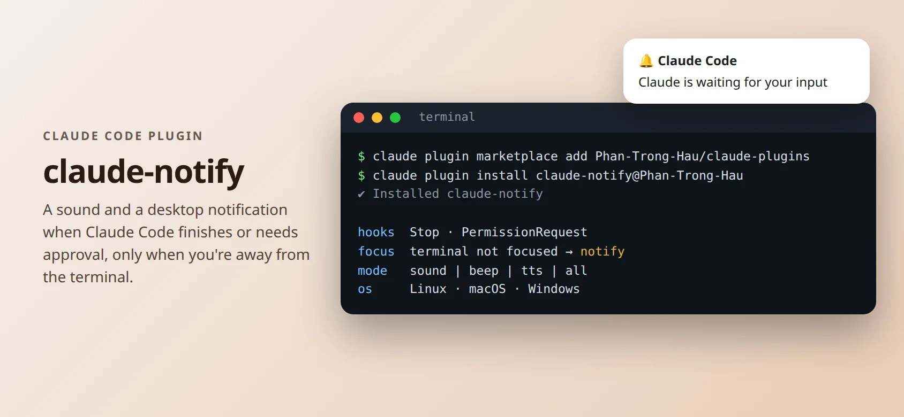

DEVELOPER TOOL · 2026
claude-notify
A Claude Code plugin that tells you when Claude has finished or needs your approval, but only when you are not looking at the terminal.
- Claude Code plugin
- Hooks
- Bash
- Python
- Linux
- macOS
- Windows

Why I built it
I run several AI coding sessions at once. Without a signal I kept checking back too early or too late.
claude-notify hooks into Claude Code and plays a sound plus an OS notification, and stays quiet when I am already in the terminal.
What it does
Stop & approval alerts
Notifies when Claude finishes a response and when it needs permission to use a tool.
Smart suppression
No alert if the terminal is focused or a new prompt was already typed.
Four modes
Sound file, system beep, text-to-speech, or all of them, with volume and delay settings.
Easy install
Published in my own plugin marketplace; also works with the Antigravity CLI.
How it works
- Claude Code hooksStop and PermissionRequest hooks call small shell scripts.
- Focus detectionChecks the active window per platform: xdotool or the COSMIC helper on Linux, osascript on macOS, PowerShell on Windows.
- Notificationsnotify-send, macOS notifications, or Windows toasts, plus audio playback.
- ConfigOverrides read from ~/.claude/settings.json and merged over defaults by a Python helper; shell tests included.
GitHub
github.com/Phan-Trong-Hau/claude-notify